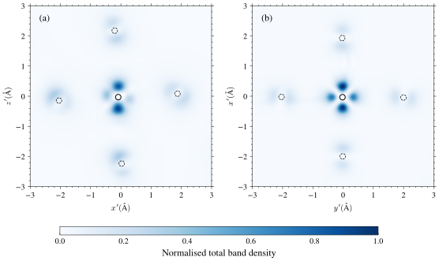

Densities
The classes under the density module handle the processing and plotting of charge and band densities. Note that there is no explicit dependence on any of the classes used in C2a, and therefore could be used standalone.
The density class supports the following features:
Loading arbitrary amount of cube data
Ability to freely perform sequential file operations. For example, if you pass in files [“a”, “b”, “c”] and “+*” then the class will contain the resulting data as
(a + b) * c, i.e. it applies operations sequentially and left-to-right like VESTA.Slicing through any \(hkl\)-plane and translating it along the plane normal with any
offset
Two extra classes are also contained in this module: chden and bandden. After searching for files, each class exposes a density instance under the .density attribute.
- chden (same name but functionally different from versions before 0.4.0) searches for {stub}_up.cube and {stub}_dn.cube (for spin-polarised) or {stub}.cube for spin-unpolarised.
- bandden searches for all Band*.cube files. It supports filtering by multiple bands, multiple \(k\)-points and spin (S1 or S2 as CONQUEST only supports collinear spin)
Finally, the module has a plotting class plot_density. This class handles all the steps and functions to process a density, and then allows you to plot said density and optionally save it to a file. This class also exposes its final Figure, Axes and imshow after calling run().
Example Usage
This example creates a final figure from two different band density instances. Each band density instance exposes its Axes so that we can use them on the external subplot.
import matplotlib.pyplot as plt
import numpy as np
from conquest2a.density import bandden, plot_densities
# Create figure instance
fig, (ax_val, ax_cond) = plt.subplots(1, 2, figsize=(8, 5))
path_to_dir = r"path/to/directory/with/band/densities" + "/"
den1 = bandden(directory=path_to_dir, # str
hkl=[0,0,1], # The slicing plane, Miller indices
offset=0.0, # How much to translate the plane by [Bohr]
bands=[87,88], # Bands to search for. Note since spin and kpts is None, it will search for all spins and files which are summed over kpts
operations="+++", # This example uses 2 bands, so since kpts=None, I get 4 files (87_S1, 87_S2, 88_S1, 88_S2). I then tell the class to add up the data across all the files.
units="ang", # The volumetric data from CONQUEST has Bohr units. This converts everything to angstroms
spin=None, # Spin filter. None is all spins
kpts=None # kpts filter, can also be a list[int] and used in conjunction with bands.
)
plot1 = plot_densities(den1,
show_atoms=True, # Plots markers of the atom locations projected onto the slicing plane, default False
extension: str = "png", # Filename extension, default to "png" and only used when no filename is supplied later
cbar_label: str | None = None, # Colourbar label
)
# fig, ax, imshow
fig, ax, im1 = plot1.run(
"test.png", # File name
ax=ax_val, # Axes instance. Default None (it will create its own)
atom_number=5, # Atom number to set as the origin of the plot
thickness=1.5, # Perpendicular distance from the plane (Bohr) to look for atoms, default 1.0
vmax=1.10, # Density values above this will be clipped. Depends on units. Default is maximum of the data
xlabel=r"$[0y0](\mathrm{\AA})$", ylabel=r"$[x00] (\mathrm{\AA})$", # Labels, can be None (hides) or True (default generated)
xlim=(-2.5,2.5), ylim=(-2.5,2.5), # limits
window_repeat=1, # How many repeats of the initial densiy to extend by
atom_repeat=1, # How many repeats of atom searches
grid_points=500, # Grid points for interpolating density. I recommend at least 500 for a clear image. Default is 1000
save=False, # Whether to save an image automatically, default True
show_colorbar=False # Whether to have a colourbar, default True. False is useful if you're plotting on an external Axes and wish to control subplots yourself.
)
den2 = bandden(directory=path_to_dir, hkl=[-2.42693,-3.6017,-1], offset=-2.21346, operations="+", bands=[89], units="ang")
blah2 = plot_densities(den2, show_atoms=True)
_,_,im2 = blah2.run("test_cond.png",ax=ax_cond, save=False, thickness=1, shift=(-2.39,4.2), xlabel=r"$[-\frac{3}{4},\frac{1}{2},-\frac{1}{5}][\mathrm{\AA}]$", ylabel=r"$[-1,0,4][\mathrm{\AA}]$", show_ticks=True, show_colorbar=False, atom_symbols=["Mn", "O"], vmax="1.1", window_repeat=2, atom_repeat=1, grid_points=500, xlim=(-3,3),ylim=(-3, 3))
For a more comprehensive example, i.e. the one shown in the README, see the examples/plot_band_density.py file, it looks like this

API
- class conquest2a.density.bandden(directory: str, hkl: tuple[int, int, int], offset: float, operations: str, bands: list[int], spin: int | None = None, kpts: list[int] | None = None, units: Literal['ang', 'bohr'] = 'bohr')
Class which looks for band density files in a directory.
- Parameters:
directory (
str) – Path to directory containing band density fileshkl (INT ARRAY) – The \(hkl\) slice of the crystal to plot charge densities in.
offset (
float) – The \(hkl\) direction defines a family of planes. Useoffsetto select which one (i.e. wherein the unit cell).operations (
str, optional) – How to combine each file inpathswith the running total of those before it, as a string with one of"+","-","x","/"per character. Must have exactlylen(paths) - 1characters. Not required (and ignored) when only one path is given, defaults toNone.charge_stub – the prefix of charge density files in CONQUEST. defaults to
chden.bands (
list[int]) – The specific bands to filter forspin (
int | None) – Whether to search for spin-up (1), spin-down (2) or any spin band density files (None). DefaultNone.kpts (
list[int]) – The specific \(k\)-points to filter for. IfNone(default), just looks for band density files which were produced from summing over \(k\)-points.units (
Literal["ang", "bohr"]) – The working units. The density data from CONQUEST is in spatial units of Bohr, and is the default.
- locate_banddens_files() list[str]
Gets the paths to all band density files, sorted by band number, \(k\) point then spin.
- Raises:
FileNotFoundError – If
self.directorydoes not exist.- Returns:
List of all paths to band density files.
- Return type:
list[str]
- class conquest2a.density.chden(directory: str, hkl: tuple[int, int, int], offset: float, operations: str, charge_stub: str = 'chden', spin: bool = False, units: Literal['ang', 'bohr'] = 'bohr')
Class which looks for charge density files in a directory.
- Parameters:
directory (
str) – Path to directory containing band density fileshkl (INT ARRAY) – The \(hkl\) slice of the crystal to plot charge densities in.
offset (
float) – The \(hkl\) direction defines a family of planes. Useoffsetto select which one (i.e. wherein the unit cell).operations (
str | None, optional) – How to combine each file inpathswith the running total of those before it, as a string with one of"+","-","x","/"per character. Must have exactlylen(paths) - 1characters. Not required (and ignored) when only one path is given, defaults toNone.charge_stub (
str, optional) – the prefix of charge density files in CONQUEST. defaults tochden.spin (
bool) – Whether to search for spin-polarised (True) or unpolarised charge density files. DefaultFalse.units (
Literal["ang", "bohr"]) – The working units. The density data from CONQUEST is in spatial units of Bohr, and is the default.
- locate_chden_files() list[str]
Gets the paths to all charge density files.
For spin-unpolarised calculation, CONQUEST will output just
chden.cube. For spin-polarised calculation, CONQUEST will outputchden_up.cubeandchden_dn.cube.This output may change if the user has set
Process.ChargeStubinConquest_inputwhich defaults tochden. Since readingConquest_inputdirectly is unsupported, just assume the user will pass in any stub.- Raises:
FileNotFoundError – If
self.directorydoes not exist.- Returns:
List of all paths to band density files.
- Return type:
list[str]
- class conquest2a.density.density(hkl: tuple[float, float, float], offset: float, paths: Sequence[str], operations: str | None = None, units: Literal['ang', 'bohr'] = 'bohr')
Process volumetric density data
- CONQUEST can output any number of
.cubefiles, e.g.: chden_up.cube/chden_dn.cubefor a spin polarised calculationa single cube file, e.g.
chden.cubefor unpolarised calculationsBand densities
This class uses ASE’s
.cubefile processor to get atoms and data. It is therefore suitable for generic.cubefile processing.An arbitrary number of
.cubefiles can be supplied viapaths. If more than one path is given,operationsis a string describing how each subsequent file is combined with the running total, applied left to right, one character per file after the first, much like VESTA:"+"add"-"subtract"x"multiply"/"divide
Example: for
paths=[a, b, c, d]andoperations="+/-", the resulting data is((a + b) / c) - d.- Parameters:
hkl (REAL ARRAY) – The \(hkl\) slice of the crystal to plot charge densities in. This will accept floats if you really want a specific plane.
offset (
Literal["ang", "bohr"]) – The \(hkl\) direction defines a family of planes. Useoffsetto select which one (i.e. wherein the unit cell).paths (
Sequence[str]) – Path(s) to one or more charge density (.cube) files. At least one path must be provided.operations (
str | None, optional) – How to combine each file inpathswith the running total of those before it, as a string with one of"+","-","x","/"per character. Must have exactlylen(paths) - 1characters. Not required (and ignored) when only one path is given, defaults toNone.units – The working units. The density data from CONQUEST is in spatial units of Bohr, and is the default.
- Raises:
ValueError – If all Miller indices are 0: cannot slice through the origin.
ValueError – If no paths are provided.
ValueError – If the length of
operationsdoes not matchlen(paths) - 1.ValueError – If
operationscontains a character other than"+-x/".ValueError – If cube files being combined have mismatched grid shapes.
ZeroDivisionError – If a
"/"operation would divide by a zero-valued voxel.
- densities: list[tuple[NDArray[float64], Atoms]]
The (data, atoms) pair loaded from each cube file in
paths, in order.
- extract_slice(n_points: int = 1000, interp_order: int = 5, shift: tuple[float, float] = (0.0, 0.0), window_repeat: float | tuple[float, float] = 1.0, rotation_deg: float = 0.0) tuple[Any, NDArray[float64], NDArray[float64], NDArray[float64], NDArray[float64], NDArray[float64]]
Sample the charge density on the \([hkl]\) plane at fractional
offset.For each point on a 2D \((t_1, t_2)\) grid centred on the plane origin:
- Compute its Cartesian position:
\(p = \text{origin} + t_1 v_1 + t_2 v_2\)
Convert to fractional coordinates:
s = p @ inv(cell)Wrap into the unit cell to enforce periodic boundaries.
Map fractional -> voxel index and interpolate via
scipy.ndimage.map_coordinates.
- Parameters:
n_points (
int, optional) – Number of points to sample on the slice, defaults to 1000interp_order (
int, optional) – The polynomial degree for interpolation, defaults to 5shift (
tuple[float, float], optional) – Vector to shift the origin on the plane by
- Returns:
A tuple containing:
density (REAL ARRAY) – Charge density in \(e/a_0^3\), shape
(n_points, n_points)v1 (REAL ARRAY) – First unit vector spanning the \([hkl]\) plane
v2 (REAL ARRAY) – Second unit vector spanning the \([hkl]\) plane
t1 (REAL ARRAY) – Scalar grid along \(v_1\)
t2 (REAL ARRAY) – Scalar grid along \(v_2\)
origin (
float) – Cartesian slice origin in Bohr
- inplane_basis() tuple[NDArray[float64], NDArray[float64], NDArray[float64]]
Return two orthonormal Cartesian vectors \((v_1, v_2)\) spanning the \([hkl]\) plane and the unit plane-normal \(\hat{n}\).
1. The plane normal in Cartesian space is \(n = ha^* + kb^* + lc^*\) where \(a^*, b^*, c^*\) are the reciprocal lattice vectors (rows of inv(cell)^T). 2. Two fractional-space null vectors of \([hkl]\) are found via SVD. 3. Those are converted to Cartesian, then Gram-Schmidt orthonormalised so the axes are perpendicular in real-space.
- plane_origin() NDArray[float64]
Return a Cartesian point lying on the plane \(ha + kb + lc =\)
offset.offsetis a dimensionless fractional intercept (0-1 spans one interplanar period). Pick the simplest fractional coordinate satisfying the plane equation.- Returns:
Origin of the slice.
- Return type:
- project_atoms(v1: NDArray[float64], v2: NDArray[float64], n_hat: NDArray[float64], origin: NDArray[float64], thickness: float = 1.0, indices: Sequence[int] | None = None, repeat: int | tuple[int, int, int] = 1) tuple[NDArray[float64], NDArray[float64], list[str]]
Project atoms within
thicknessof the slice plane onto \((v_1, v_2)\) axes.- Parameters:
v1 (REAL ARRAY) – First unit vector spanning the \([hkl]\) plane
v2 (REAL ARRAY) – Second unit vector spanning the \([hkl]\) plane
n_hat (REAL ARRAY) – Unit vector defining the slice
origin (REAL ARRAY) – The origin of the slice
thickness (
float, optional) – The Cartesian distance perpendicular to the plane to consider atoms as lying on the slice, defaults to 1.0 Bohr.indices (
Sequence[int] | None, optional) – The atom indices to allow to be shown, default None (show all that are found)
- Returns:
A tuple containing:
t1_proj (REAL ARRAY) - Positions of label along \(v_1\)
t2_proj (REAL ARRAY) - Positions of label along \(v_2\)
syms (
list[str]) - List of atom labels
- shift_onto_atom(atom_number: int) tuple[float, float]
Produce the vector shift needed to set an atom to be at the origin of the plane.
- Parameters:
atom_number (int) – The atom number to shift to
- Returns:
2D vector to shift by
- Return type:
tuple[float, float]
- CONQUEST can output any number of
- class conquest2a.density.plot_density(source: density | chden | bandden, show_atoms: bool = False, extension: str = 'png', cbar_label: str | None = None)
Helper class to slice, analyse, and plot slices of volumetric density data.
Takes a
densityinstance directly, or withchdenorbanddenthat exposes aself.densityattribute- Parameters:
source (
density|chden|bandden) – The density data to plot.show_atoms (
bool, optional) – Whether to show atom labels on the plot, defaults to False.extension (
str, optional) – File extension used for auto-generated filenames (leading “.” optional), defaults to “png”.cbar_label (
str | None, optional) – Label for the colour bar. If not given, a sensible default is chosen based on the type ofsource- charge density and band density are conventionally expressed in different units.
- plot_slice(density_grid: NDArray[float64], t1: NDArray[float64], t2: NDArray[float64], v1: NDArray[float64], v2: NDArray[float64], atom_data: tuple[NDArray[float64], NDArray[float64], list[str]] | None = None, log_scale: bool = False, vmin: float | None = 0.0, vmax: float | None = None, figsize: tuple[float, float] | None = None, ax: Any | None = None, normalise: bool = False, owns_figure: bool = False, xlabel: str | bool | None = None, ylabel: str | bool | None = None, xlim: tuple[float, float] | None = None, ylim: tuple[float, float] | None = None, title: str | None = None, show_colorbar: bool = True, show_ticks: bool = True, tick_kwargs: Mapping[str, Any] | None = None, cmap: str = 'Blues', cbar_kwargs: Mapping[str, Any] | None = None, atom_symbols: Sequence[str] | None = None, label_atoms: bool = True, atom_size: float = 50, atom_fontsize: float = 8, atom_fontcolor: Mapping[str, str] | None = None, atom_bgcolor: Mapping[str, str] | None = None, atom_edgecolor: Mapping[str, str] | None = None, atom_kwargs: Mapping[str, Mapping[str, Any]] | None = None, **imshow_kwargs: Any) tuple[Any, Any, Any]
Create the plot and save it to disk.
- Parameters:
density_grid (REAL ARRAY) – Sliced density data, shape
(n_points, n_points).t1 (REAL ARRAY) – Scalar grid along \(v_1\)
t2 (REAL ARRAY) – Scalar grid along \(v_2\)
v1 (REAL ARRAY) – First unit vector spanning the \([hkl]\) plane
v2 (REAL ARRAY) – Second unit vector spanning the \([hkl]\) plane
atom_data (
tuple[REAL_ARRAY, REAL_ARRAY, list[str]] | None, optional) – Data for atom labels, seedensity.project_atoms, defaults to Nonelog_scale (
bool, optional) – Whether to plot the density on a base-10 logarithmic scale - useful for revealing details without colour clipping, defaults to False
For extra params, please see
plot_density.run()below. :returns: Tuple containing figure, axes and imshow instances created :rtype:tuple[Any, Any, Any]
- run(filename: str | None = None, log_scale: bool = False, atom_number: int | None = None, shift: tuple[float, float] = (0.0, 0.0), thickness: float = 1, normalise: bool = False, rotation: float = 0.0, vmin: float | None = 0.0, vmax: float | None = None, figsize: tuple[float, float] | None = None, savefig_kwargs: Mapping[str, Any] | None = None, ax: Any | None = None, save: bool = True, xlabel: str | bool | None = None, ylabel: str | bool | None = None, xlim: tuple[float, float] | None = None, ylim: tuple[float, float] | None = None, title: str | None = None, show_colorbar: bool = True, show_ticks: bool = True, cmap: str = 'Blues', cbar_kwargs: Mapping[str, Any] | None = None, atom_symbols: Sequence[str] | None = None, atom_indices: Sequence[int] | None = None, label_atoms: bool = True, atom_fontcolor: Mapping[str, str] | None = None, atom_bgcolor: Mapping[str, str] | None = None, atom_edgecolor: Mapping[str, str] | None = None, atom_size: float = 160, atom_fontsize: float = 8, atom_kwargs: Mapping[str, Any] | None = None, grid_points: int = 500, window_repeat: float | tuple[float, float] = 1.0, atom_repeat: int | tuple[int, int, int] = 1, **imshow_kwargs: Any) tuple[Any, Any, Any]
Runs the full sequence of steps:
Extracts a slice from the underlying
densityOptionally projects nearby atoms onto the slice
Plots and saves the result
- Parameters:
filename (
str | None, optional) – Filename to save as. Will save with a useful name if not provided, defaults to Nonethickness (
float, optional) – The Cartesian distance perpendicular to the plane to consider atoms as lying on the slice, defaults to 1 Bohr. Only useful ifshow_atoms=Truenormalise (
bool, optional) – Whether to normalise densities to the interval [0,1]. Useful if attempting to plot densities with different sums. Defaults tofalse.rotation (
float, optional (degrees)) – The angle to rotate the in-plane basis by in degrees. Defaults to 0.0log_scale (
bool, optional) – Whether to plot the density on a base-10 logarithmic scale, defaults to Falseatom_number (
int, optional) – Atom number to center the density plot onshift (
tuple[float, float], optional) – Vector to shift the origin on the plane by. Note the shift is \((\Delta v_1, \Delta v_2)\).vmin (
float | None, optional) – Minimum value to set the colour scale at, defaults to 0.0vmax (
float | None, optional) – Maximum value to set the colour scale at, defaults to Nonefigsize (
tuple[float, float] | None, optional) – Override the auto-computed figure size, defaults to Nonesavefig_kwargs (
Mapping[str, Any] | None, optional) – Extra keyword arguments forwarded tomatplotlib.pyplot.savefig(), defaults to Noneimshow_kwargs – Any further keyword arguments (e.g.
cmap,interpolation) are forwarded tomatplotlib.pyplot.imshow().ax (matplotlib.pyplot.Axes | None) – the Axes instance to plot into. Default
None(create its own)save (bool) – Whether to save a copy of the density automatically, defaults to True
xlabel (str | bool | None = None) – Plot’s \(x\)-axis label. If None, it is hidden. If
Truethen uses an autogenerated one.ylabel (str | bool | None = None) – Plot’s \(y\)-axis label. If None, it is hidden. If
Truethen uses an autogenerated one.xlim (tuple[float, float] | None = None) – x-axis limits. Defaults to (min, max) of data range
ylim (tuple[float, float] | None = None) – y-axis limits. Defaults to (min, max) of data range
title (str | None = None) – Axes plot title. None (default) produces no title.
show_colorbar (bool) – Whether to produce a colourbar alongside the density plot, defaults to True
show_ticks (bool) – Whether to show ticks on the density plots, defaults to True
cmap (str, optional) – Colour theme to use. Defaults to matplotlib’s “Blues”. For publication, we recommend any theme with contrast, e.g. pure white background with a single colour gradient. Saves ink and easy to see!
cbar_kwargs (Mapping[str, Any] | None, optional) – Extra colourbar arguments to pass to matplotlib
atom_symbols (Sequence[str] | None, optional) – Atom labels to filter out. Default is None, which filters nothing
atom_indices (Sequence[str] | None, optional) – Atoms to filter out. Default is None, which filters nothing
label_atoms (bool, optional) – Whether atom markers should show the element label, defaults to True (why else would you want them?)
atom_fontcolor (dict[str, str] | None, optional) – Text colour of the atom labels
atom_bgcolor (dict[str, str] | None, optional) – Background colour of the marker corresponding to a specific element. Defaults to a specific colour dict (see source).
atom_edgecolor (dict[str, str] | None, optional) – Colour of the marker edge corresponding to a specific element. Defaults to white.
label_atoms – Whether atom markers should show the element label, defaults to True (why else woudl you want them?)
atom_size (float = 160, optional) – Size of atom marker
atom_fontsize (float = 8, optional) – Fontsize of atom label. Defaults to 8pt.
grid_points (int = 500, optional) – Number of grid points to use for interpolation. Defaults to 500. Very expensive beyond 1000.
window_repeat (float | tuple[float, float] = 1.0) – How many repeats to look for.
atom_repeat (int | tuple[int, int, int] = 1) – How many atom repetitions to search for
- Returns:
Tuple containing figure, axes and imshow instances created
- Return type:
tuple[Any, Any, Any]